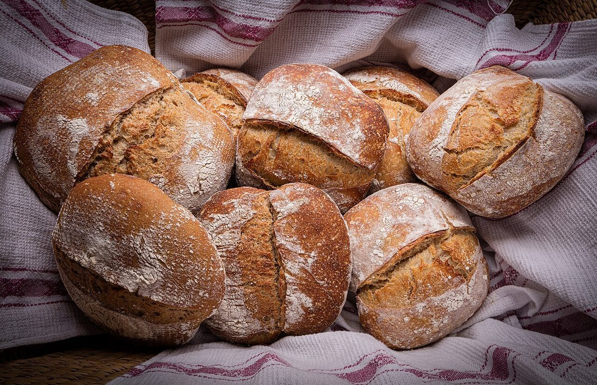
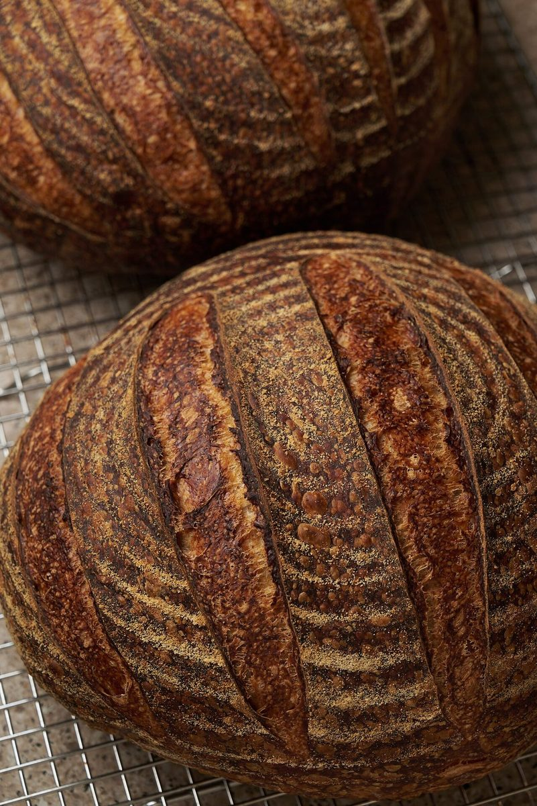
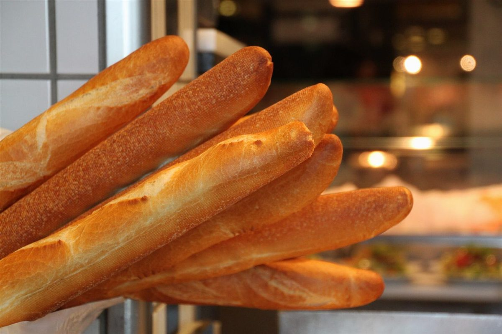

店のこと
店のこと
お店について確認できているのは、所在地とInstagramのアカウントだけです。
このページの「想像してみる」部分は、制作側が想像して書いたものです。お店の実際の様子・考え・メニューとは関係がありません。
確認できていること
- 店名は「グランアーブル」、業種はパン屋
- 所在地は岐阜県岐阜市長住町１丁目１７(〒500-8175)
- 電話番号はなし。連絡はInstagramから
- 営業時間・定休日・メニュー・価格・ご予約・駐車場は準備中

想像してみる
「グラン」という響きから
由来は分かりません。制作側は、パンの写真を眺めながら、小さなパンから大きなパンまで、大きさの違うものが並ぶ姿を思い浮かべました。ただし、これはパン屋という業種から想像しただけで、実際のお店の姿ではありません。


